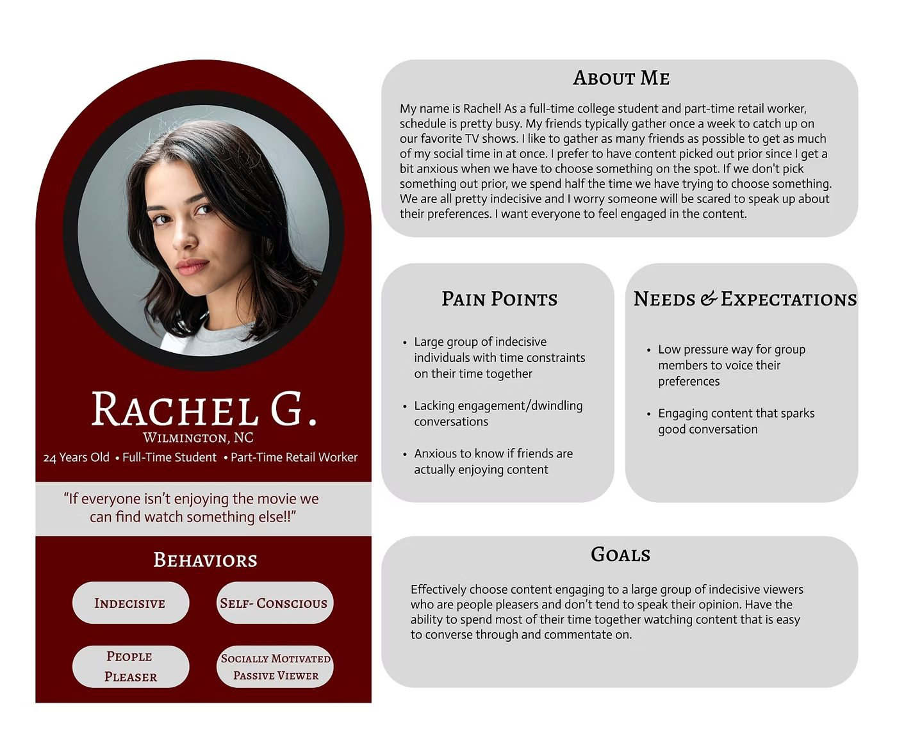
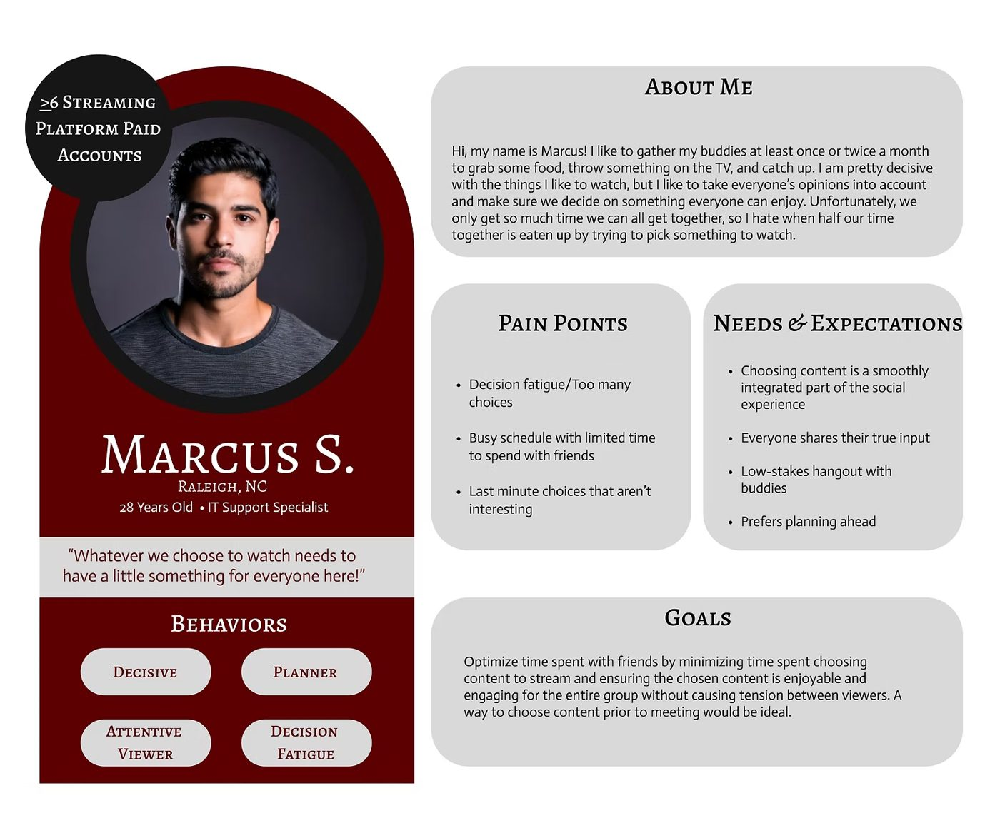
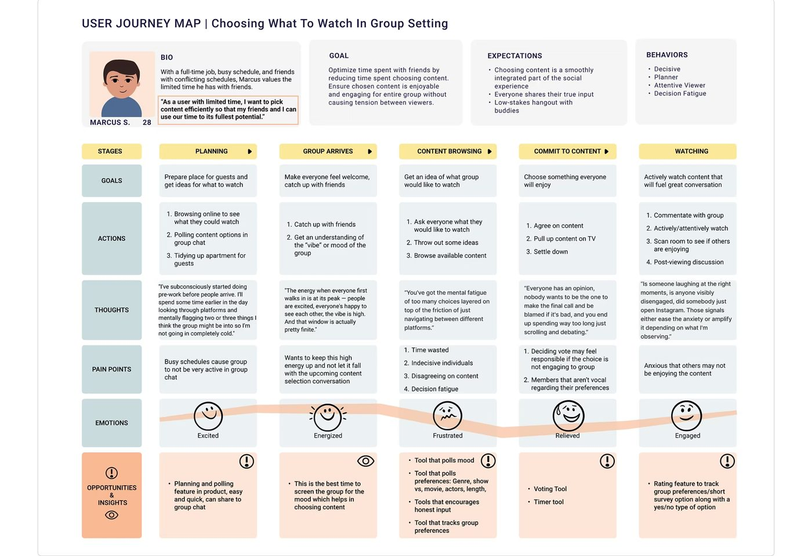
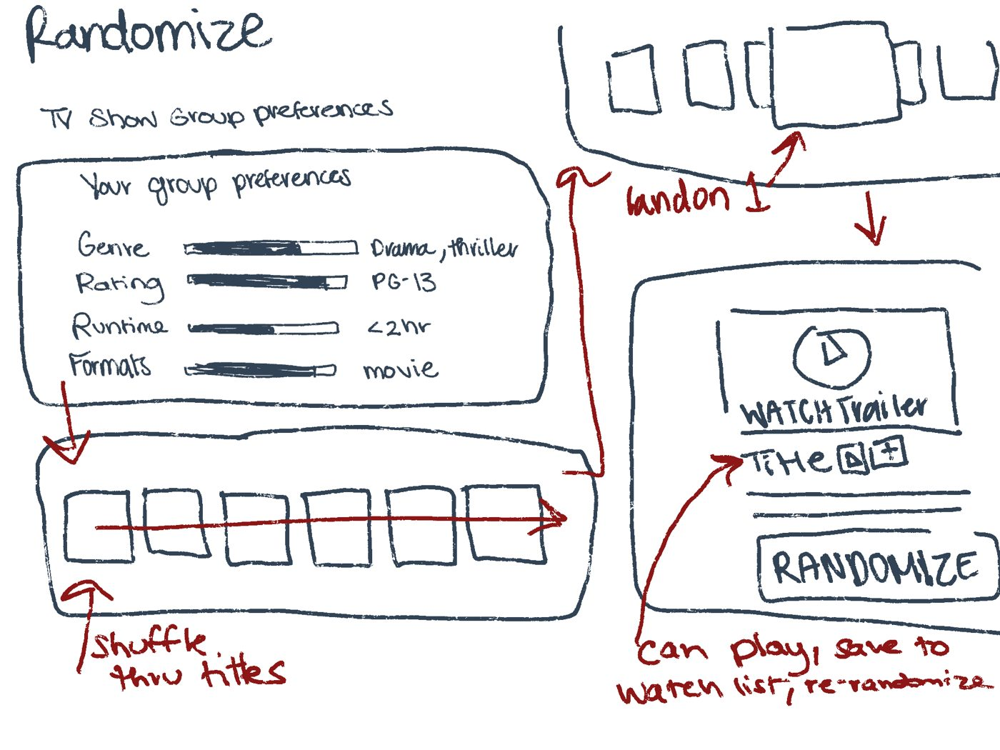
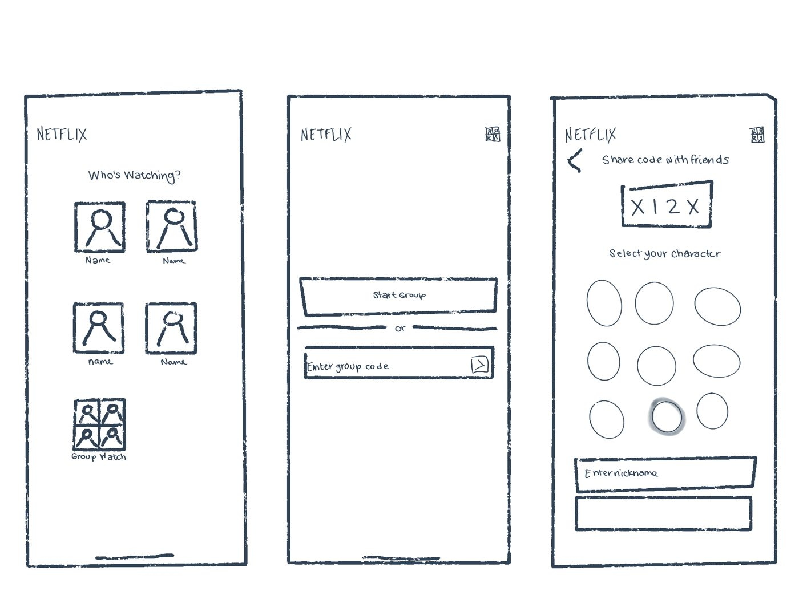
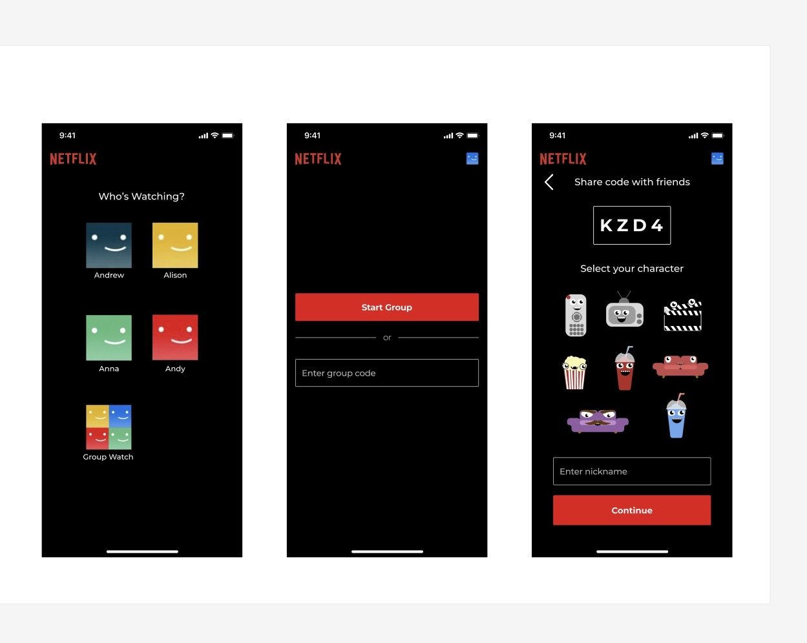
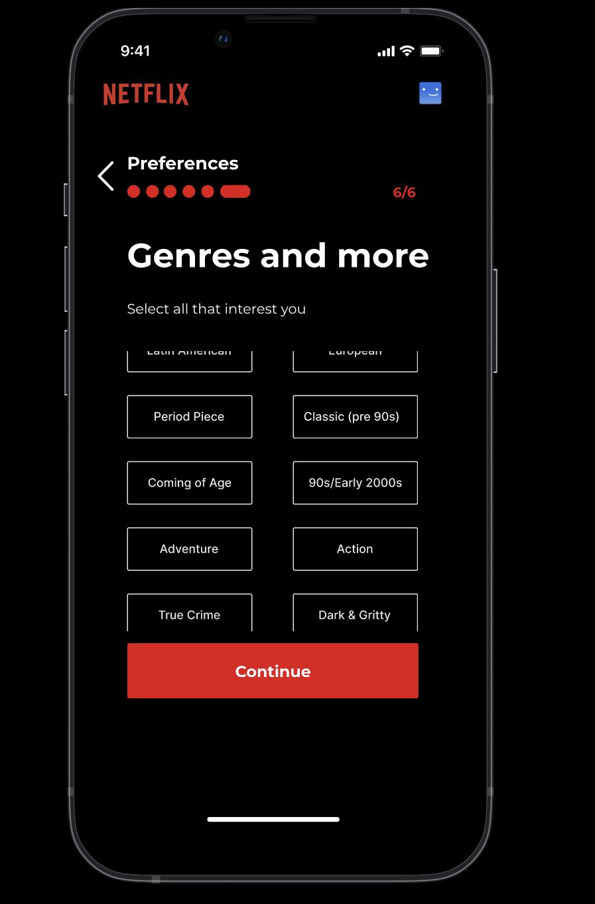
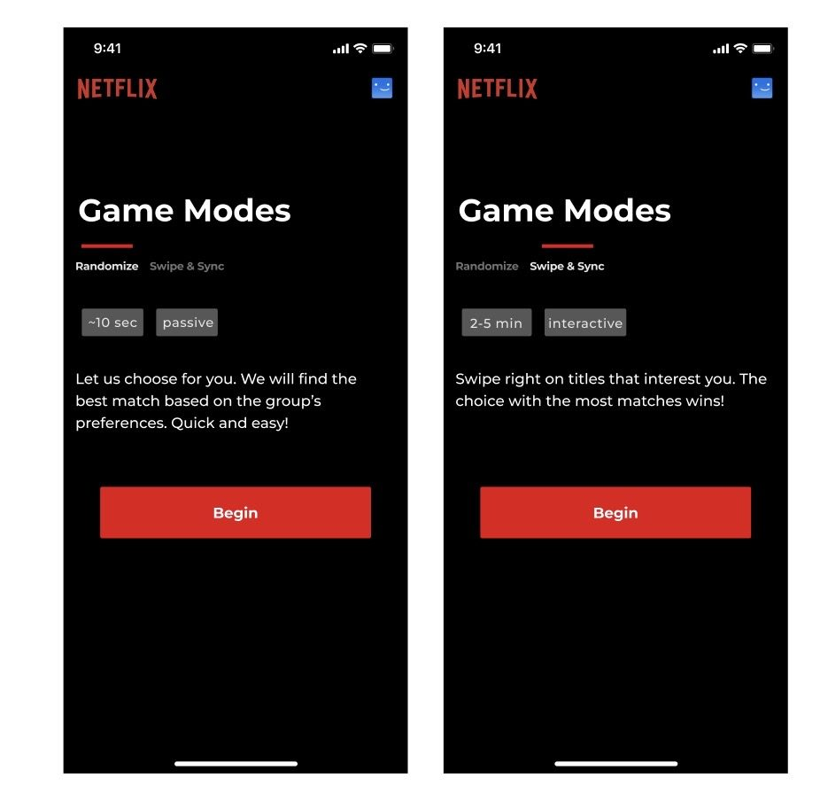
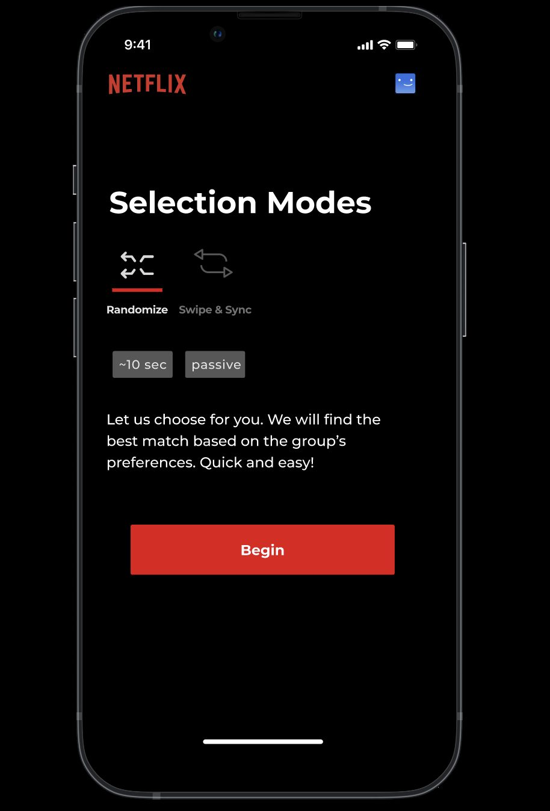
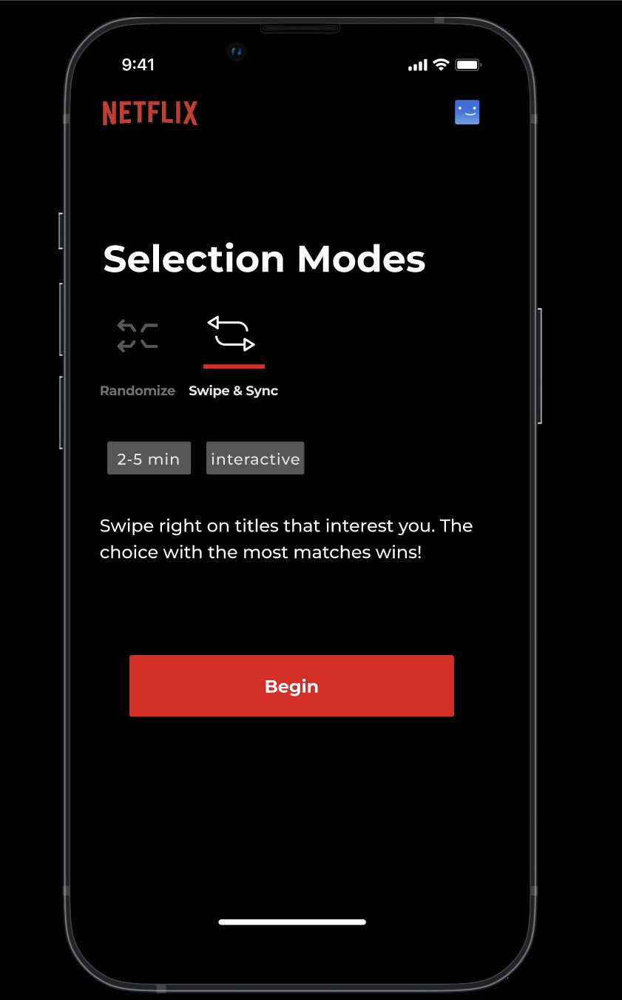

Case study / Student concept, Spring 2026
Group Watch: helping friends agree on what to watch
A solo course project. I researched how groups choose what to watch, designed two ways to decide together, tested an interactive prototype with three people, and redesigned from what they said.
- Role
- Solo UX researcher and designer
- Context
- MEJO 581 final project, Spring 2026
- Methods
- Interviews, personas, journey map, sketches, Figma prototype, usability test
- Delivered
- Research, prototype, test plan, two redesigns
NoteAn unaffiliated student concept. Not a Netflix project, and not reviewed or endorsed by any company.
Concept
Group Watch is a proposed feature inside a streaming app, so a group can decide without leaving it. It’s for friends and households who spend more time choosing than watching.
It has two modes. Randomize is a quick pick that takes about ten seconds. Swipe & Sync has everyone swipe on titles until the group finds a match.
If this were real, I’d measure success by time-to-play and how often groups use it. I didn’t measure either; this is a concept.
Research
I interviewed two people about how they choose what to watch with others. My course also had me run the same questions through an AI tool as a third respondent, which I treat as a supplement and not a participant.
LimitTwo real interviews is a very small base, so I treat the personas as early hypotheses.
From the interviews I wrote two personas with opposite approaches: Rachel, who is indecisive and wants to please everyone, and Marcus, who plans ahead and decides fast. The portraits are not photos of real participants. Both pointed to one principle: take the pressure off any one person while making everyone feel heard.


I also mapped Marcus’s evening in five stages: planning, the group arrives, browsing, committing, and watching. The “thoughts” on the map are illustrative, written in the format my professor required. They are not participant quotes.

Design
I started with digital sketches, then built a high-fidelity prototype in Figma. Both modes run on what the group enters in five preference questions: vibe, movie or series, time available, rating, and genres to avoid.



One idea from the journey map, showing the group’s viewing preferences, stayed out of the prototype to keep the scope manageable.
Usability test
I tested the prototype with three participants on UserTesting. Each had five tasks with a three-minute limit:
- Find the Group Watch tile.
- Start a group and pick a character.
- Set preferences and reach the mode choice.
- Pick a mode and get to a result.
- Go back and try the other mode.
I started with questions about how participants decide today, then ran the tasks, then asked follow-ups, including a 1 to 5 ease rating.
Testers raised three concerns:
- The genre options were limited.
- They couldn’t see what their friends had chosen.
- The game modes were unclear. One tester said, “I don’t know what game modes mean.”
My testSome task wording named interface terms, which can hint at the answer, and one task was unclear. Pass or fail was my only measure, with no timing or per-task ratings. I’d tighten all of this next time.
Redesigns
1. A genres step
I added a sixth preference screen, “Genres and more,” with a scrollable list of genres, eras, and tones.

2. Clearer mode names
I renamed “Game Modes” to “Selection Modes,” added an icon above each mode, and underlined the active tab.



Seeing friends’ choices is still open. It depends on the group-preferences work I left out of scope.
Reflection
- Went well: most testers moved through the flow quickly, and each change traces to something a tester said.
- Next time: build the full prototype, give each task its own starting point since the tasks overlapped, shorten the task time, and write tighter questions.